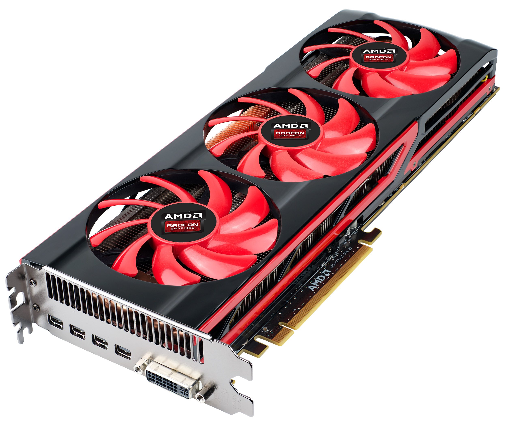
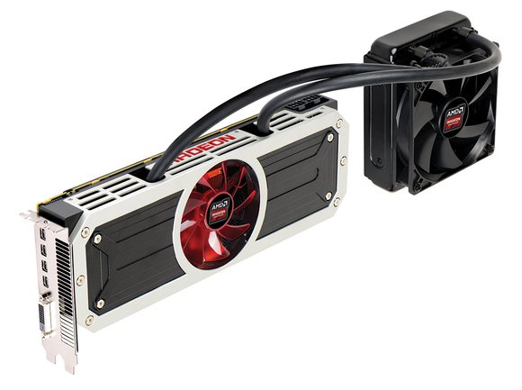
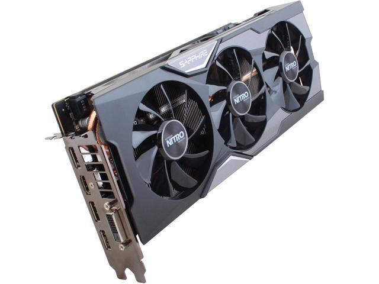
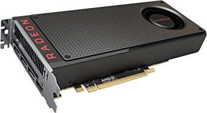
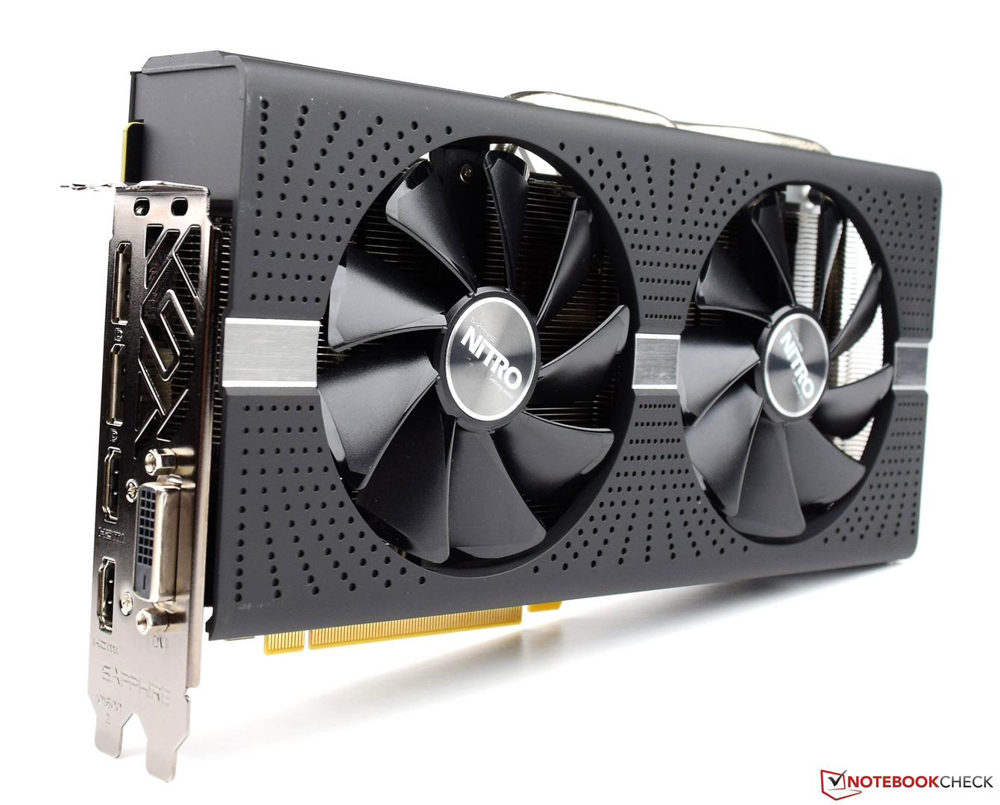
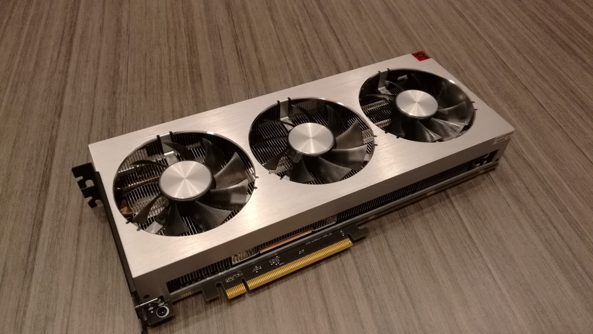

AMD Randeon videókártyák
A Radeon egy, az ATI Technologies (az AMD leányvállalata) által fejlesztett GPU-család; a nevet használják továbbá az ilyen chipeket hordozó videokártya-sorozat megnevezésére is. A termékvonal a Rage sorozatot követve 2000-ben jelent meg, s termékei azóta - az újabb DirectX-eljárások megjelenésével - három nagyobb generációs váltáson estek át. A sorozat tagjai az nVIDIA készítette GeForce grafikus processzorok - a számítási teljesítményt tekintve - egyetlen lényegi riválisai.Több infó





